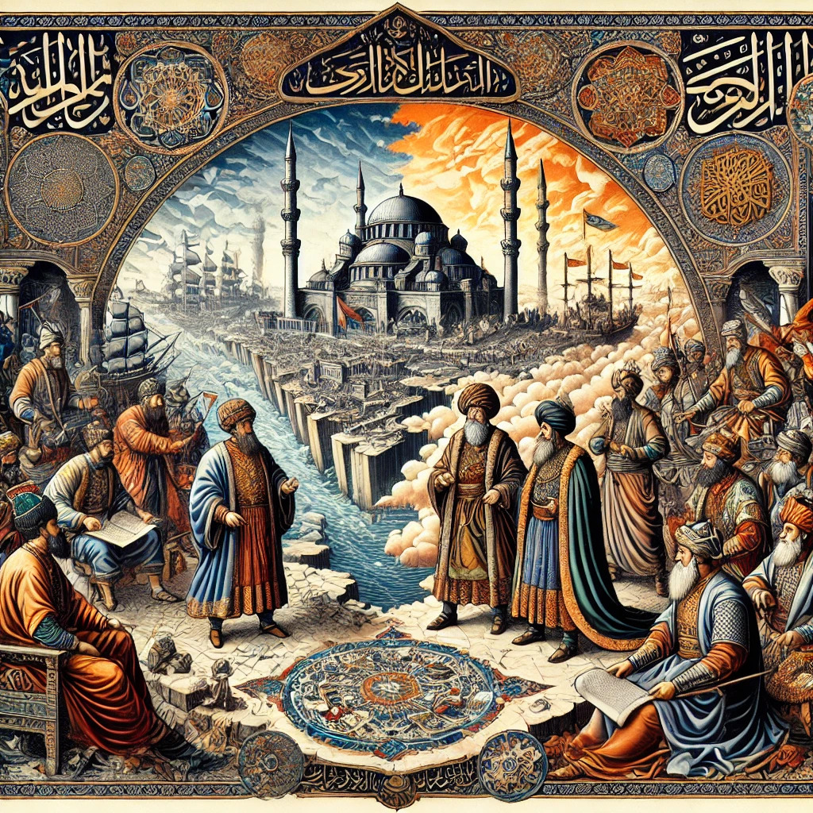

| önceki |  |
sonraki |
Fetret Devri veya Bunalım Dönemi (Osmanlıca: فترت دوری; 1402 – 1413), 28 Temmuz 1402 tarihinde Yıldırım Bayezid'in Timur'a yenilerek esir düştüğü Ankara Muharebesi'nin hemen ardından başlayan ve 5 Temmuz 1413'te Çelebi Mehmed'in devleti tek bayrak altında birleştirmesine kadar tam 11 yıl süren Osmanlı taht kavgaları ve iç savaş dönemidir. Bu süreçte devlet bir padişahtan mahrum kalmış; Yıldırım Bayezid'in dört oğlu (Süleyman, İsa, Musa ve Mehmed Çelebi) meşru saltanatı ele geçirmek amacıyla birbirleriyle kanlı mücadelelere girişmiştir.
Ankara Muharebesi Sonrası Parçalanma ve Şehzadeler
Timur ordusunun 1402'de Çubuk Ovası'nda kazandığı zaferin ardından Anadolu Türk Beylikleri (Aydınoğulları, Saruhanoğulları, Germiyanoğulları, Menteşeoğulları, Karamanoğulları, Candaroğulları) Timur tarafından yeniden canlandırıldı ve Osmanlı topraklarının yarısından fazlası elden çıktı. Geriye kalan Osmanlı mülkü ise Bayezid'in oğulları arasında fiilen paylaşıldı:
- Emîr Süleyman Çelebi: Sadrazam Çandarlı Ali Paşa ile birlikte Rumeli'ye geçerek Edirne'de hükümdarlığını ilan etti. Bizans, Venedik, Ceneviz ve Sırp Despotluğu ile Gelibolu Antlaşması'nı imzalayarak Rumeli'de güçlü bir hâkimiyet kurdu.
- İsa Çelebi: Karesi ve Balıkesir bölgesinden hareketle Bursa'ya girdi ve Anadolu'da hükümdarlığını ilan etti.
- Çelebi Mehmed (I. Mehmed): Sadık lalası Bayezid Paşa ile birlikte Amasya ve Tokat bölgesine çekilerek Canik ve Orta Karadeniz Türkmenlerini etrafında topladı.
- Musa Çelebi: Babasının yanında esir düşmüş, Timur'un vefatından sonra serbest bırakılarak babasının naaşını Bursa'ya getirmiş; başlangıçta Germiyan'da Mehmed Çelebi'nin müttefiki olarak hareket etmiştir.
- Mustafa Çelebi: Timur tarafından esir alınarak Semerkant'a götürülmüş, yıllar sonra "Düzmece Mustafa" olarak ortaya çıkacaktır.
İsa Çelebi ile Mehmed Çelebi'nin Çarpışmaları (1403 – 1406)
Anadolu hâkimiyeti için ilk çatışma İsa Çelebi ile Çelebi Mehmed arasında patlak verdi. İki kardeş ordusu 1403'te Bursa yakınlarında Ulubat Muharebesi'nde karşılaştı. Mehmed Çelebi üstün gelerek Bursa'yı ele geçirdi. Kaçan İsa Çelebi, önce Yalova üzerinden Bizans'a, oradan Edirne'deki ağabeyi Süleyman Çelebi'nin yanına sığındı.
Süleyman Çelebi'den aldığı takviye orduyla tekrar Anadolu'ya geçen İsa Çelebi, Karamanoğulları ve Aydınoğulları'ndan da destek alarak peş peşe taarruzlar düzenledi. Ancak Çelebi Mehmed karşısında her defasında yenilgiye uğradı ve nihayetinde 1406 yılında Eskişehir civarında yakalanarak boğduruldu.
Süleyman Çelebi'nin Anadolu Seferi ve Musa Çelebi'nin Hamlesi
İsa Çelebi'nin saf dışı kalması üzerine Rumeli hükümdarı Emîr Süleyman Çelebi büyük bir orduyla Anadolu'ya geçti. Bursa ve Ankara'yı ele geçirdi. Çelebi Mehmed Amasya dağlarına çekilmek zorunda kaldı. Bu kritik anda Mehmed Çelebi dahi bir strateji geliştirdi: Kardeşi Musa Çelebi ile anlaşarak onu deniz yoluyla Rumeli'ye sevk etti.
Eflak Voyvodası Mircea'nın kızıyla evlenen ve Eflak-Bulgar desteğini arkasına alan Musa Çelebi, 1410 yılında Edirne üzerine yürüdü. Rumeli'nin elden çıkmak üzere olduğunu duyan Süleyman Çelebi alelacele Edirne'ye döndü. 1410 Yanbolu Muharebesi'ni Süleyman kazandıysa da, rehavete kapılıp Edirne Sarayı'nda hamamda içki ve eğlenceye daldığı bir sırada Musa Çelebi 17 Şubat 1411 gecesi Edirne'ye ani bir baskın düzenledi. Saraydan kaçmaya çalışan Süleyman Çelebi, Düğüncü köyü civarında köylüler tarafından yakalanarak öldürüldü.
Musa Çelebi'nin Rumeli Saltanatı ve İstanbul Kuşatması
Edirne'de tahta oturan Musa Çelebi, son derece sert, tavizsiz ve radikal bir siyaset izledi. Uç beylerini ve yeniçerileri etrafında topladı; fıkıh alimi Şeyh Bedreddin'i kazasker tayin etti. Süleyman Çelebi'ye destek veren Bizans'ı cezalandırmak amacıyla 1411 yılında İstanbul'u karadan ve denizden şiddetle kuşattı. Bizans İmparatoru II. Manuil köşeye sıkışınca Amasya'daki Çelebi Mehmed'e elçiler göndererek yardım istedi.
Çamurlu Derbent Muharebesi ve Fetret'in Sonu (1413)
Bizans'ın gemileriyle ordusunu Boğaz'dan Rumeli'ye geçiren Çelebi Mehmed; Bizans İmparatoru, Sırp Despotu ve bazı Rumeli beylerinin desteğiyle Musa Çelebi'ye karşı harekete geçti. 5 Temmuz 1413 tarihinde günümüz Bulgaristan'ında Samokov yakınlarında gerçekleşen Çamurlu Derbent Muharebesi'nde Musa Çelebi'nin ordusu yenildi. Yaralı olarak kaçmaya çalışan Musa Çelebi bir bataklıkta yakalanarak kementle boğuldu.
Bu nihai zaferle birlikte 11 yıllık kanlı kardeş kavgası sona erdi; Çelebi Mehmed Edirne'de tek başına Osmanlı tahtına oturarak I. Mehmed unvanıyla devleti yeniden ayağa kaldırdı.
Balkanlar'ın Sadakati: İstimâlet Politikası Mucizesi
Fetret Devri'nin dünya tarihindeki en hayret verici yönü; Anadolu'da tüm beylikler Osmanlı'ya isyan edip parçalanırken, Hristiyan nüfusun çoğunlukta olduğu Balkanlar'da (Rumeli) Osmanlı aleyhine hiçbir ciddi halk ayaklanmasının yaşanmamış olmasıdır. Tarihçiler bu mucizevi sadakati Osmanlı'nın uyguladığı "İstimâlet" (Hoşgörü ve Adalet) politikasına bağlar:
- Hristiyan tebaanın dinine, kilisesine ve mülküne asla dokunulmamış; feodal derebeylerin ağır angarya ve vergileri yerine adil ve makul bir vergi sistemi uygulanmıştır.
- Balkan halkı, Bizans ve Latin derebeylerinin zulmü yerine Osmanlı adalet ve himayesini tercih etmiş, bu sayede devlet en zayıf anında dahi Rumeli'deki varlığını koruyabilmiştir.
Dönemin Edebi Şaheseri: Mevlid
Fetret Devri'nin kederli yıllarında, Süleyman Çelebi'nin Edirne sarayında Bursa Ulu Camii imamı Süleyman Çelebi tarafından 1409 yılında kaleme alınan ve Hz. Muhammed'in (s.a.v.) doğumunu anlatan ölümsüz şaheser Vesîletü'n-Necât (Mevlid-i Şerîf) Türk edebiyatı ve İslam dünyasının en sevilen metinlerinden biri olarak bu devrin manevi mirası olmuştur.
Fetret Devri hakkında daha fazla bilgi için buraya tıklayın.